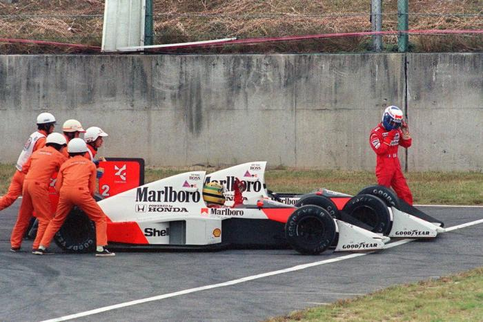

HISTÓRIA DE MANIPULAÇÕES!

Ayrton Senna acusa: tudo foi manipulado ao longo do ano, inclusive a imprensa, Pilotos, equipes, a F1 em geral, temem que este tipo de arbitrariedades se alastre, e se indignam contra o despotismo do Poder Desportivo. Ayrton continua, com a mesma força, apesar das injustiças.
Por Francisco Santos
SUZUKA - 22.10.89.
Depois do acidente na 47ª volta, Alain Prost deixa o carro engatado (difícil para os comissários o tirarem dali, mas até concedemos a dúvida do esquecimento natural), fica uns segundos, incrédulo, no local vendo a manobra de retirada do McLaren de Ayrton, e seu posterior retorno à pista, e dirige-se aos boxes assediado por jornalistas, entre os quais Franco Lini e Nigel Roebuck. Insinua-lhes sempre que Ayrton estaria desclassificado. Por que motivo? Apenas este lhe parece que deve ser desclassificado... Vai ter com Jean-Marie Balestre. Falam sobre o caso. Demoradamente.
Depois de cruzar a linha de chegada, Ayrton é levado para a sala dos Comissários Desportivos. Quando
chega vê Prost e Balestre, que não deviam ali estar, como aponta, e muito bem. Não o deixam subir
ao pódio. Está desclassificado.
Volta ao "motor-home" da McLaren-Honda. Encontra Alain Prost, que lhe fala (era a primeira vez que se
falavam desde Mônaco); para lhe dizer como sentir ter tudo acabado assim
. Ayrton: Só lhe disse
para desaparecer da minha vista
, de uma forma que o Ron (Dennis) entendeu bem que a coisa iria ficar
preta, e levou o francês dali para fora.
Duas horas depois de tudo terminado, o Presidente Balestre explicou à imprensa o desenrolar dos
acontecimentos: A McLaren reclamara da decisão da Direção da Prova, mas os Comissários Desportivos
depois de verem por 30 vezes o video do acidente decidiram manter a decisão inicial. Ron Dennis
anunciara a intenção de apelar, e depois de conseguir o acordo da Federação Japonesa de Automobilismo e
do Royal Automobile Club, o processo seguiu diretamente para a FIA, onde o Tribunal Internacional de
Apelação dicidiria em última instância. Esta foi a solução preferida por todos, para que o caso fosse
resolvido antes do GP da Austrália. Balestre lembrou: Como o Tribunal da FIA deveria reunir-se a 26 e
27 para decidir o "caso Mansell", entretanto retirado pela Ferrari, os juizes poderiam encontrar-se
em Paris para tratar deste caso Senna.
Como lhe é habitual, o Presidente Balestre não deixou de dar a sua opinião "meramente pessoal". Segundo
ele, Senna cometeu vários erros: primeiro, passou pelo interior da zona que delimita o acesso aos
boxes; depois, deveria ter abandonado o seu carro, como fez Prost; por último, ao ter conseguido que
os fiscais de pista lhe tivessem posto o carro no meio da pista, deveria ter seguido por esta, em
vez de optar pela escapatória.
Balestre ainda referiu mais dois pontos regulamentares infringidos por Senna: Primeiro, na alínea g) do
Anexo L do Regulamento do Campeonato, respeitante às ultrapassagens, é indicado que só a pista pode ser
utilizada pelos pilotos durante as provas.
PARIS - 27.10.89.
Com a presença de Ron Dennis e Ayrton Senna, Roland Bruynseraede, Inspetor de Segurança da FISA para a F1, John Corsmit, Presidente do Colégio de Comissários Desportivos no GP do Japão, e do Diretor deste GP, os quatro juizes do Tribunal Internacional de Apelação da FIA emitiram o seguinte comunicado: "Depois de escutadas atentamente todas as partes, e tendo em conta a importância deste assunto, o Tribunal de Apelação da FIA decidiu prolongar o período de reflexão, e a deliberação final até à próxima segunda feira, no mínimo. O secretariado da FIA pode ser contatado desde a próxima terça feira, 31 de outubro, para informar sobre a data e hora exatas em que a decisão será tornada pública."
Uma vergonha. Balestre estava ainda em Tóquio, para assistir ao Motor Show, e certamente não queria que nada fosse resolvido em sua ausência, apesar de se tratar do Legislativo máximo do esporte motorizado.
PARIS - 28.10.89.
O Tribunal de Apelação da FIA reune-se novamente e decide o "caso Senna".
LONDRES - 30.10.89.
A McLaren reune a imprensa para apresentar o seu caso, em que fez circular o relatório oficial de Yvon Léon, da FISA, sobre o GP do Japão, o que irritou bastante a Autoridade Desportiva Internacional. Dennis aproveitou também para "lamentar que a FIA utlilize dois pesos e duas medidas" para julgar este caso. Ron Dennis comete o grave erro de divulgar alguns dados da audiência do Tribunal de Apelação da FIA, o que iria ter consequências irremediáveis neste caso, já que terá colocado muito mais lenha na fogueira devido aos pergaminhos parisienses...
PARIS - 31.10.89
A FIA divulga a decisão do Tribunal de Apelação (já publicada quase na íntegra no diário "L’Equipe" desse dia (...): Além de "confirmar a decisão dos Comissários Deportivos do GP do Japão, corrige-a por excesso, de acordo com o Art.189 do C.D.I., agravando-a com uma suspensão do seis meses com pena suspensa a contar desta decisão, e uma multa de 100 mil dólares ao piloto Ayrton Senna." Quer isto dizer que se Ayrton cometer alguma falta (julgada pela FISA, claro) nos GPs da Austrália 1989, dos EUA e Brasil 1990, terá então uma pena definitiva de 6 meses a contar da data dessa infração. Para espanto geral, o Tribunal, composto por Jan van Rosmalen, da Holanda, Presidente, Manos Remvikos, da Grécia, Philippe Roberti do Winghe, da Bélgica, e José Macedo e Cunha, de Portugal, em vez de se limitar a decidir sobre este caso ocorrido no GP do Japão, instaurou uma verdadeira inquisição sobre a conduta de Ayrton Senna em pista nos últimos 14 meses. Foram-lhes apontadas culpas em seis incidentes:
- GP de Itália 1988: Colisão na chicane com Jean-Louis Schlesser. Devem ter-se esquecido que apenas poderiam apontar a Senna a ousadia de pensar que Schlesser já não conseguiría voltar à pista depois de sair em frente, e que foi o próprio Schlesser que no final da prova admitiu a culpa do acidente.
- GP do Brasil 1989: Colisão com Berger na primeira volta. Segundo Senna, todos os três pilotos envolvidos, Patrese, Berger o ele, foram culpados, já que todos se comprometeram a essa primeira curva depois da largada sem deixar espaço para outro carro. Ele admite apenas um "erro de julgamento". De qualquer forma não se tratou de pilotagem perigosa. Casos destes são demais comuns nas largadas de GPs.
- GP de França 1989: Perigosa mudança de direção, ao cortar a pista da direita para a esquerda. Esta é demais! Será que os Senhores Doutores não se lembram que o McLaren de Senna ficou sem qualquer tração 200m depois da largada e que ele, de braço erguido esperou o momento certo para levar o carro para o lado esquerdo da pista, deixando-o ficar lá, sem tração?!?! É dose!
- GP de Portugal 1989: Responsabilidade compartilhada no acidente com Mansell.
Por que não foi punido na época? Se a memória não me falha, foi Mansell o acusado nesse caso.
Segundo Senna:
Nunca vi a bandeira preta, pois se a tivesse visto teria deixado Mansell passar, como o havia feito voltas antes. Naquele ponto, com os carros como estavam não haveria forma dele me passar. Se não tivéssemos batido ele nunca conseguiría fazer a curva... Por isso nem contei que ele me fosse passar nesse momento.
- GP de Espanha 1989: Falta de respeito pela bandeira vermelha, significando ordem de parada para a corrida. Duas seguidas são demais: haja dó com a paciência de todos nós, amantes do esporte. Em primeiro lugar, como apontei veemente na cobertura deste GP, não lhe foi mostrada uma bandeira vermelha (nem podería ter sido, pois esta bandeira é mostrada apenas pelo Diretor da Prova, e foi-lhe mostrada a bandeira PRETA pelos fiscais de pista!). Depois, foi ele, ou não, já punido por essa falta cometida nos treinos, e não na corrida (multa de US$20.000)?!
- GP do Japão 1989: O piloto cometeu oito atos ilegais de fato:
- Violação do Art.1() das instruções do Diretor da Prova, reiterando as sanções por manobras perigosas. Bruynseraede declarou que "Senna não seguiu a trajetória ideal antes da chicane e efetuou uma finta ao utilizar a zona de desaceleração, deixando pensar que iria entrar nos boxes, mesmo a grande velocidade, voltando depois à pista para tentar ultrapassar Prost, que, ele, sim, seguia a trajetória correta". Coitada da nossa paciência! Fintas? Trajetória correta a de Prost? Que video viram? Não deve ter sido o que mostra o ângulo do carro de Prost, nem o dois movimentos de suas mãos.
- Não completou a distância da prova, por ter cortado a chicane e não ter retomado a pista no lugar em que a abandonou, e ultrapassou os limites da pista (Apêndice L, Cap.IV) - 2 faltas. Foi esta a única razão por que foi desclassificado pelos Comissários Desportivos, a que a McLaren responde: "... Não existem disposições no Código sobre situações como estas, se um piloto deixa a parte principal da pista e deve depois retomá-la no ponto em que a deixou. Na realidade, áreas de escape são parte integrante de grande número de circuitos. Os obstáculos são colocados no asfalto dessas areas de escape precisamente para assegurar que um piloto, ao utilizá-las, daí não possa tirar vantagem".
- Violação do Cap.IV - Apêndice L, g): "Apenas a pista pode ser usada pelos pilotos durante a prova". McLaren: "É nítido para todos os envolvidos em corridas de automóveis, que o uso de uma área de escape (por razões de segurança) não constituirá bom fundamento para a exclusão de um piloto. "
- Violação dos regulamentos relativos à parada de um carro numa prova, tendo tirado vantagem de lhe empurrarem o carro quando tentavam colocá-lo em posição segura, área em que o C.D.I. é muito claro. Toda a questão da desclassificação de Ayrton no Japão parece-me que deveria ter residido sobre este ponto: ele estaria desclassificado logo quando recebeu o segundo empurrão, que lhe permitiu por o motor em marcha. Segundo Ayrton, quando o carro já estava na áreas de escape, "encontrava-se em posição perigosa, pelo que seria sempre necessário um segundo empurrão para o tirar dali". Discutível, a meu ver.
- Deixou parcialmente a pista numa manobra perigosa ao tentar ultrapassar o carro n°2. McLaren: "O carro de Senna não iniciou a sua ultrapassagem até depois de passsar a entrada para o "pitlane".
- Violou os regulamentos ao cruzar a linha de limite entre a zona de desaceleração e a pista. Repetição.
- Causou a eliminação do carro n°2, o líder da prova ao longo de 47 voltas, por ter feito uma manobra perigosa, em alta velocidade, proibida pelo Cap.IV, c). Isto é a Formula 1, ou...o quê?! Velocidade excessiva? O que é isso? Quem sabe julgar a velocidade excessiva de um Campeão Mundial? Um grupo de advogados, sentados no n°8 da Place de la Concorde? O Senhor Balestre? Querem matar a Formula 1? Querem retirar à competição automobilística seus fatores mais atraentes: velocidade e risco? Haja!
- Repetiu a perigosa manobra algumas voltas depois com Nannini, que teve de frear com violência para deixar Senna passar. "Se a FISA considera muito perigoso ultrapassar na entrada da chicane de Susuka, então deveria impor a presença permanente de uma bandeira amarela nesse local, como acontece no gancho do Circuito da Guia, em Macau", lembra bem Luis Vasconcelos no semanário Autosport, de Portugal. A McLaren lembra ainda que no relatório da FISA se afirma que: "os acontecimentos ocorridos nos últimos meses em diversos GPs provam que se Senna é um piloto talentoso, também ameaça a segurança dos outros pilotos".
Não nos parece muito abonatório para uma Federação Internacional apelidar de perigoso um piloto que já venceu o seu campeonato mais prestigiante, e seria bom que as pessoas conseguissem distinguir um piloto agressivo de um piloto perigoso. Mas, pelos vistos, nem todos são capazes...
, lembra por último a McLaren.
ATITUDE INQUISITÓRIA
O que nos parece altamente preocupante é o fato do Tribunal de Apelação Internacional da FIA ter sido chamado para julgar um apelo de um concorrente, a McLaren, e depois vir a julgar casos anteriores em que o piloto em questão esteve envolvido, e para os quais já havia, ou não, sido julgado. Isto parece-me muito grave para o futuro do automobilismo. Poderiamos até ironicamente nos perguntar por que motivo Ayrton não foi agora punido também pelos seus acidentes de F3 com Martin Brundle, ou até de qualquer falta cometida em Interlagos há uma década, no kart??? Isto parece realmente muito danoso para o automobilismo mundial, e para a F1 em particular.
BALESTRE: "AVISO PARA TODOS".
Depois de Jacques Sarrut, Diretor Geral da FIA anunciar a decisão do Tribunal de Apelação, Jean-Marie
Balestre falou à Comunicação Social:
Lembram-se da F 3000 do ano passado? É isso que temos de frear. Senna tem muito talento, mas ele deve
primeiramente dominar sua fogosidade. Esta pena não o impede de ter belos anos à sua frente. Empregamos
esforços consideráveis nos últimos anos para melhorar a segurança. É inadmissível que pilotos
profissionais tirem proveito disso para correr todos os riscos. Quanto à McLaren, ela pode tentar os tribunais civis, que não temos medo, nunca perdemos uma causa. Ron Dennis por vezes quer ser inteligente demais, mas pode cair do cavalo.
Segundo o diário parisiense "L’Equipe", Balestre ligou de seguida para Prost, em Adelaide, na Austrália,
e contou-lhe tudo o que se passara, finalisando com a bela frase para um Presidente da FISA:Alain, se
realmente me queres agradar, a mais bela recompensa que me poderías dar, seria calares a boca no domingo
a todos os que proclamam que tu não és o melhor piloto do momento.
Sem comentários...
ADELAIDE - 02.11.89.
Todo a comunidade da F1 a saber da pena imposta a Ayrton Senna e os "motivos" que levaram o Tribunal de Apelação da FIA a tomar essa invulgarmente dura medida, manifestou-se quase unânimemente a favor do piloto e do bom-senso, que pareceu faltar em Paris:
Juan Manuel Fangio: Decisão do tribunal foi lamentável. Ayrton não é um piloto
perigoso. Teria feito o mesmo que ele, no Japão.
Jackie Stewart: A suspensão de Senna incomoda-me, já que não estava em causa antes do
apelo. Depois deste, foi-lhe inflingida uma sanção que diante de um tribunal civil não passará de
certo. Ayrton cometeu um erro: colocou-se nas mãos do seu rival.
Alan Jones: Um piloto como Ayrton Senna, por ter já conquistado um título mundial e 41
poles é obrigado a tomar certos riscos, o que não significa de modo algum que seja um piloto perigoso.
Stirling Moss: "Estou muito desapontado com tudo isto, que penso ser muito ruim para o esporte. O fato de suspender um piloto por ele fazer justamente aquilo para que lhe pagam, andar o mais rápido que conseguir, é muito injusto. Estou ao lado da McLaren na sua luta. O principal é lutar contra o método de apelo, que está errado.'
Cesare Fiorio: Creio que a pena aplicada a Ayrton está principalmente ligada à conferência de imprensa da McLaren, em Londres".
Bernie Ecclestone: "Na entrada da chicane Prost começou a curvar 1Om antes do normal. Essa pena é muito violenta."
Ken Tyrrell: "Gostava muito que meus pilotos fossem tão agressivos quanto Senna. Fico com a sensação que a FISA acabou de proibir as ultrapassagens."
Lee Gaugh (Goodyear): Penso que a desclassificação foi justa, mas os motivos do
castigo referem-se ao passado. Se nessa altura pensavam que ele tinha sido perigoso, deveríam tê-lo
punido nesse momento e não anos depois.
Frank Williams: "Não vejo qualquer razão para que Senna fosse suspenso ou multado. "
Roberto Moreno: "Se a FISA me multar em cem mil dólares só posso fazer uma de duas coisas: ou fujo para o Brasil com minha mulher e minha filha, ou entrego-me à polícia, pois não tenho tanto dinheiro."
Riccardo Patrese: "Não sei se o que Ayrton fez foi errado ou não, mas o resultado é ruim para o esporte. Ele não merece a reputação que lhe atribuiram, pois os acidentes que teve não foram todos culpa sua, e o Senna não é um piloto perigoso. Além do mais estava sendo julgado o caso de Suzuka e não a sua carreira."
Thierry Boutsen: “O Ayrton não é um piloto perigoso. O que acontece é que ele está sempre na frente, mais exposto ao julgamento de todos. Não merecia o tratamento que teve."
Nigel Mansell: "Não fiquei surpreendido. Ele merecia esta sanção, pois foi salvo muitas vezes, quando deveria ter sido punido, e agora apanhou tudo de uma vez. Até hoje só tive problemas em pista com um piloto, Senna, e o mesmo se passa com a maioria dos outros pilotos."
Pierluigi Martini: A desclassificação é justa, mas ele deveria ter sido mandado parar
de imediato. A acusação de velocidade excessiva é ridícula, pois não somos motoristas de taxi. Se eu
cometer um erro e bater em outro piloto também sou multado em cem mil dólares?
ADELAIDE - 03.11.89
Na reunião de imprensa dada pela McLaren, Ron Dennis afirmou:
Isto não vai ficar escondido debaixo do tapete. O que aconteceu está errado, e foi feito por motivos
errados. Vamos lutar. Em último caso, isto vai tocar todos no automobilismo. De alguma
forma, estas decisões, a forma como foram tomadas, os métodos usados, têm de ser paradas. Pensamos
que já foram longe demais. Os regulamentos estão certos, mas têm de ser aplicados corretamente por pessoas que sabem o que são os
valores certos. Não podem ser usados como arma para forjar resultados. O que está em causa é mais do que
a decisão agora tomada. Com esta abre-se a porta a toda espécie do arbitrariedades. Vamos lutar para
defender os nosos valores de honestidade e "fair-play”.
Fontes ligadas à McLaren deixam transparecer que houve manipulação, inclusive de documentos no GP do Japão, que teriam sido trocados e que, mais tarde, apareceram com textos alterados e sem a assinatura correspondente do responsável da equipe, o que, por si só, se provado, pode fazer pender o caso inexoravelmente para o lado da McLaren num tribunal civil. Foram também levantadas dúvidas quanto ao direito da FISA em introduzir novos elementos no julgamento que se deveria restringir ao caso do Japão. Claro que aqui entra em causa o relatório de Yvon Léon, do GP do Japão em que o Inspetor da FISA faz referências ao passado de Ayrton. Este é o documento-chave de todo este "caso Senna”, tanto pelo seu conteúdo, como pela sua divulgação fora de tempo. Foi levantada a eventualidade de uma outra irregularidade no processo: O comunicado da FIA refere apenas a quatro juizes, quando o Art. 188 b) do atual Anuário da FIA é estipulado que cinco membros da corte têm de estar presentes para esta ser válida. Entretanto, também em Adelaide, a FISA fez questão de reproduzir para a imprensa, Balestre, que não se deslocou à Austrália, afirmou que "não apreciava o ar de Carnaval tumultuoso que a imprensa internacional, particularmente a brasileira, estava a dar ao "caso Senna", e lembrou que "o Conselho Mundial de Automobilismo tem poderes para excluir da F1 qualquer pessoa que se recuse a aplicar as decisões da FISA e da FIA, bem como todos aqueles que pelas suas palavras ou textos causem prejuízo ou danos morais àquelas duas entidades e seus oficiais". A FISA também distribuiu em Adelaide um comunicado lembrando que em 1985 e 1988 teve dois processos nos tribunais civis, Tyrrell e Peugeot, em cujas sentenças estes se declaravam incompetentes para julgar situações que só dizem respeito a uma associação e seus filiados, desde que dentro do respectivo regulamento.
A grande vítima de todo esta caso, Ayrton Senna, falou bem claro em Adelaide:
O que se passa é uma enorme manipulação por parte de pretensos campeões e governantes, que usam seus
postos e poderes para defender valores errados. Não vou desistir de lutar, nem alterarei minha forma
de estar na pista e na vida. Não me vou deixar abater pelo que está acontecendo. Tenho de ficar mais
motivado. Depois do Japão pensei em abandonar, mas agora já estou preparado para lutar de novo. O
que me fizeram foi injusto e irreal. Trataram-me como se fosse um criminoso, culpado de tudo. Meu
único crime é ser rápido, estar em boa posição de tirar o campeonato do outro, e não ser francês.
Não é importante ganhar o campeonato. O que importa é merecê-lo, porque conquistá-lo de forma pouco
desportiva não tem valor. Durante todo este ano manipularam tudo, usaram-me, chamaram-me de pouco
profissional, místico, tudo, enfim. A imprensa foi usada a favor de pessoas que não mereciam. Agora
vou passar a denunciar as situações falsas.
Todos os pilotos fazem manobras perigosas, às vezes para eles próprios, por vezes para os outros. Eu não sou diferente, mas parece que não
tenho o direito de falhar, pois sou o único a ser punido.
APOIOS
A Honda Motor Corporation divulgou o seu apoio incondicional à McLaren International na sua luta contra a sanção imposta a Senna. Além deste apoio, a McLaren tem já o apoio de todas as equipes de F1, receosas que este episódio se possa repetir no futuro com elas, inclusive menos poderosas que a Marlboro McLaren Honda, e mais vulneráveis a arbitrariedades do Poder Desportivo, que já anunciou entretanto ter o direito - pelo Art.58 do C.D.I. - de cassar a licença de qualquer equipe ou piloto, que, como a McLaren quiser intimidar a FISA com processos na Justiça Civil. Poderemos estar à beira de uma grave crise política na F1. Pelo menos que este triste "caso Senna" tenha esse mérito, de despoletar uma revolução de moralização desportiva no automobilismo mundial.
ESTORIL - 17.11.89.
Ayrton testa na pista do Estoril novas suspensões para 1990. A princípio com pouco
ânimo, como quando cheguei a Adelaide, mas depois de sentar no carro, por o motor em marcha e entrar
na pista, voltou ao de cima, essa tremenda vontade de correr, o que eu gosto mais, o que me move,
apesar de tudo, de todos os problemas, e o que me vai continuar a dar força para lutar contra tudo e
todos. Foi aqui no Estoril que senti que tenho mesmo de continuar. Se parasse agora, estaria fazendo
o que os outros querem...
Era o último compromisso de Ayrton nesta temporada. Sozinho com toda a equipe da Mclaren-Honda, apenas com as breves visitas de Ron Dennis, com quem conferenciou a sós, certamente sobre o "caso FIA", e de Alan McNish, o novo segundo piloto de testes, Ayrton ansiava pelas férias no Brasil, longe de tudo: "até fevereiro não sento mais no carro, porque senão é impossível recompor-me de tudo isto; o Berger, o Pirro e o McNish que andem. Eu tenho de me recompor; de ganhar novas forças, para voltar ainda mais forte na próxima temporada, para enfrentar essa briga. Muita água ainda vai rolar. "
Ayrton continua firme. Acreditando nos valores morais que lhe dão força invulgar. Que o ajudam a trilhar o tipo de vida que escolheu, obstinada, dedicada, sacrificada em prol do seu objetivo: correr e ser competitivo, o que quer dizer agressivo, e não perigoso. Ajudado por uma grande fé em Deus, que de uma forma humilde e crente diz ajudá-lo e protegê-lo. Como a todos que Nele acreditam. Espiritualmente. Dando força de vontade. Sem dar um sentido de imunidade. Sem tirar o medo. Apenas dando mais vontade de vencer. É esse o verdadeiro Ayrton. Brasileiro. Católico. Crente. Com o misticismo dos gênios. Injustiçado. Apenas.